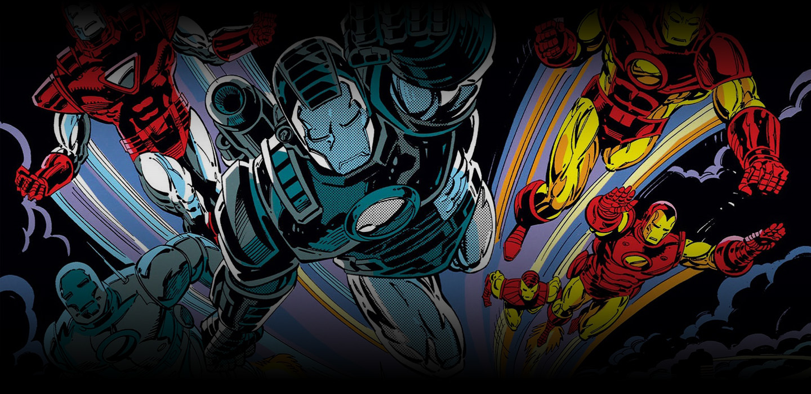
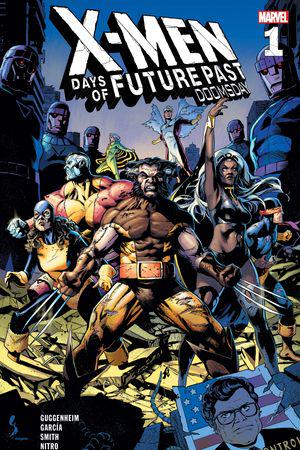

<!DOCTYPE html>
<html lang="en"></html>
<head>
    <meta charset="UTf-8">
    <meta hhtp-equiv="X-UA-Compatible" content="IE=edge">
    <meta name="viewport" content="width=device-width, initial-scale=1.0">
    <title>index.html</title>
    <link rel="stylesheet" href="css/stile2.css">
    <link rel="preconnect" href="https://fonts.googleapis.com">
    <link rel="preconnect" href="https://fonts.gstatic.com" crossorigin>
    <link href="https://fonts.googleapis.com/css2?family=Days+One&display=swap" rel="stylesheet">

</head>

<body>
    <header>
        
        <hr class="linea2" color="(0, 0, 0, 0.20)" size="1px" >
    </section>
        <div class="heroverse">
            <li><a href=""></a></li>
    </div>
    
    <hr class="linea1" color="#39386A" size="1px">

        <nav>
            <ul>
                
                <li ><a href="#">HOME</a></li>
                <li ><a href="index.html">MCU</a></li>
                <div class="fumetti">
                <li ><a href="index2.html">FUMETTI</a></li>
                </div>
                <li ><a href="#">PERSONAGGI</a></li>
                <li ><a href="#">CHI SIAMO</a></li>
            </ul>
        </nav>
        
            <hr class="linea3" color="(0, 0, 0, 0.20)" size="1px">
        
    </header>
    <main>
        <div class="imm">
        
        </div>
        
            <div class="titolo">
        <h1 >FUMETTI</h1>
        
            </div>
        <section class="bottoni">
            <li><a href="index6.html">TITOLI</a></li>
            <li><a href="index8.html">NUOVI RILANCI</a></li>
            <li><a href="index7.html">CROSSOVER</a></li>
        </section>
        <section class="margini">
            <div class="container4">
                <div class="lista3">
                    <p>I fumetti della Marvel sono un'ampia collezione di storie illustrate che hanno dato vita a alcuni dei personaggi più iconici e amati della narrativa supereroistica. I fumetti Marvel sono stati pubblicati sin dagli anni '60 e hanno creato un universo narrativo esteso e appassionante.
                        <br><br><br>Presentano una vasta gamma di generi, tra cui supereroi, azione, avventura, fantascienza, horror e molto altro. Le storie si concentrano su personaggi come Spider-Man, Iron Man, Captain America, Hulk, Thor e i membri degli X-Men fino ai personaggi più "terrestri" come Daredevil, Punisher e Jessica Jones, i fumetti offrono una gamma diversificata di eroi con le loro storie uniche.
                        <br><br>Offrono anche la possibilità di esplorare diversi mondi e dimensioni, come il regno di Asgard, il mondo mutante degli X-Men o il regno sotterraneo dei Inumani.
                        </p>
                </div>
                <div class="immagine5">
                    
                </div>
                    <div class="immagine6">
                    
                </div>
             </div>
             <div class="container">
                <div class="content">
                        
                </div>
                <div class="testo">
                       <p >Un aspetto distintivo dei fumetti Marvel è l'interconnessione tra i vari titoli e personaggi. Spesso i personaggi si incontrano in crossover ed eventi epici che coinvolgono più serie. Ad esempio, "Secret Wars" è stato un crossover che ha coinvolto numerosi eroi e cattivi in un conflitto su una misteriosa entità cosmica. Questi crossover offrono un'esperienza narrativa più ampia e coinvolgente per i lettori.
                           <br><br><br>Negli anni, i fumetti Marvel hanno anche affrontato temi sociali e politici importanti, come la discriminazione, il razzismo, la tolleranza e la giustizia sociale. Molte storie Marvel hanno offerto una riflessione sul mondo reale attraverso la lente dei supereroi.
                           <br><br>I fumetti Marvel continuano a essere prodotti oggi, con nuove serie che esplorano nuovi aspetti dei personaggi e nuove trame. Queste storie sono disponibili in forma di singoli numeri, raccolte di graphic novel e in formato digitale, offrendo molte possibilità di esplorare l'universo Marvel attraverso la lettura.
                       </p>
                   </div>
               </div>
        </section>
    </main>
    <footer>
        <hr color="(0, 0, 0, 0.20)" size="1px" >
        <div class="container5">
            <div class="heroverse2">
                
            </div>
            <div class="contatti">
                <nav>
                    <ul>
                <li ><a href="#">CHI SIAMO</a></li>
                <li ><a href="#">CONTATTI</a></li>
                    </ul>
                </nav>
            </div>
            <div class="app">
                
                
                 
               
            </div>
        </div>
        <hr color="(0, 0, 0, 0.20)" size="1px">
    </footer>
</body>